МИНИСТЕРСТВО СТРОИТЕЛЬСТВА
ПРЕДПРИЯТИЙ
НЕФТЯНОЙ И ГАЗОВОЙ ПРОМЫШЛЕННОСТИ
Всесоюзный
научно-исследовательский институт
по строительству магистральных трубопроводов
ВНИИСТ
ИНСТРУКЦИЯ
ПО ПРИМЕНЕНИЮ КОМПЛЕКСА УСТРОЙСТВ
ДЛЯ НЕРАЗРУШАЮЩЕГО КОНТРОЛЯ
СПЛОШНОСТИ ИЗОЛЯЦИОННЫХ ПОКРЫТИЙ
ЗАГЛУБЛЕННЫХ ТРУБОПРОВОДОВ
ВСН 210-87
Миннефтегазстрой
Москва 1987
РАЗРАБОТАНЫ И ВНЕСЕНЫ Всесоюзным научно-исследовательским институтом по строительству магистральных трубопроводов (ВНИИСТ)
Н.П. Глазов - канд. техн. наук, зав. отделом
К.Л. Шамшетдинов - ответственный исполнитель
Л.Ф. Щербакова - ответственный исполнитель
Н.В. Шашуба - исполнитель
ПОДГОТОВЛЕНЫ К УТВЕРЖДЕНИЮ Главным техническим управлением Миннефтегазстроя
В.И. Рыжков - главный технолог
Н.И. Курбатов - главный инженер
Б.С. Ланге - начальник инспекции
|
Министерство строительства предприятия нефтяной и газовой промышленности |
Ведомственные строительные нормы |
ВСН 210-87 Миннефтегазстрой |
|
Инструкция по применению комплекса устройств для неразрушающего контроля сплошности изоляционных покрытий заглубленных трубопроводов |
Впервые |
|
Внесена Всесоюзным научно-исследовательским институтом по строительству магистральных трубопроводов, ОЭЗ |
Утверждена министерством строительства предприятий нефтяной и газовой промышленности 28 апреля 1987 г. |
Срок введения 01.01.88 г. |
1.1. Требования настоящей Инструкции распространяются на все виды работ с комплексом устройств (в дальнейшем «устройство») для неразрушающего контроля сплошности изоляционных покрытий заглубленных трубопроводов, а именно: определение трассы, глубины заложения трубопровода и сплошности изоляционных покрытий. Сплошность изоляционных покрытий заглубленных трубопроводов понимают как отсутствие сквозных дефектов в изоляционном покрытии, через которые осуществляется контакт металла трубы с электролитом окружающей среды.
Устройство для неразрушающего контроля состоит из генератора переменного тока и приемника, воспринимающего от трубы сигнал, генерированный генератором.
При организации контроля сплошности изоляционных покрытий необходимо руководствоваться:
ГОСТ 25812-83 «Трубопроводы стальные магистральные. Общие требования к защите от коррозии»;
ГОСТ 9.015*-74 «Единая система защиты от коррозии и старения. Подземные сооружения. Общие технические требования»;
СНиП III-42-80 «Правила производства и приемки работ, магистральные трубопроводы»;
«Инструкцией по контролю качества
строительства и техническому надзору при производстве изоляционно-укладочных
работ и сооружений средств электрохимической защиты на магистральных трубопроводах»
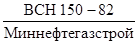
Результаты проверки качества покрытия оформляют актом.
1.2. Теоретические основы поиска трассы и глубины заложения даны в приложении.
Подготовительные работы
2.1. Подготовительные работы, предшествующие контролю сплошности изоляционных покрытий засыпанных одиночных трубопроводов, осуществляются в лабораторных условиях и включают:
осмотр, проверку и проведение профилактики составных частей устройства;
подзарядку аккумулятора;
проверку и смену в случае необходимости источника питания приемника;
подготовку визирных колышков.
Для осуществления привязки обнаруженных дефектных мест к длине трубопровода и фиксации их в технической документации необходима рулетка либо другой инструмент, позволяющий проводить измерение длины на поверхности земли.
Определение дефектов в изоляционном покрытии заглубленного одиночного трубопровода
2.2. Определение положения оси трассы трубопровода
Генератор переменного тока подключают в электрическую цепь «труба-заземлитель». Заземлитель должен быть удален от контрольно-измерительного пункта ни расстояние 30 - 50 м перпендикулярно к оси трубопровода. Элемент цепи «труба» реализован электрическим выводом от трубы на контрольно-измерительном пункте (рис. 1). Устанавливают максимальный режим работы генератора мощности, при котором его выходные напряжения и сила тока максимальны.
Рис. 1. Схема поиска дефектов в изоляционном покрытии засыпанного одиночного трубопровода контактным продольным способом:
1 - генератор; 2 - приемник; 3 - заземлитель; 4 - контрольно-измерительный пункт; 5 - трубопровод; 6 - контактные устройства; 7 - график изменения показаний индикатора при перемещении контактных устройств вдоль трубопровода; 8 - дефект в изоляционном покрытии; 9 - грунт
На расстоянии не менее 10 м от контрольно-измерительного пункта вдоль трассы определяют место пересечения с поверхностью земли вертикали, проходящей через центр трубопровода. Для этого ось магнитной антенны приемника устанавливают вертикально и, передвигая антенну в горизонтальной плоскости перпендикулярно к оси трубопровода, находят минимум показаний индикатора приемника. На поверхности земли колышком отмечает место обнаруженного минимума. Указанную операцию проводят по трассе трубопровода. Колышки, отмечающие ось трассы трубопровода, устанавливают в пределах видимости (через 100 - 200 м).
2.3. Определение дефектов в изоляционном покрытии заглубленного одиночного трубопровода продольным способом (см. рис. 1).
Генератор подключают к трубопроводу в соответствии с п. 2.2.
Два оператора с контактными устройствами (электроды-штыри, медносульфатные электроды, нижные планки либо шпоры), находясь над осью трубопровода на расстоянии друг от друга 6 - 10 м, движутся вдоль предварительно размеченной трассы, сохраняя заданное расстояние между собой и осуществляя одновременно электрический контакт с землей. Допускается смещение пути движения операторов от оси трубопровода на расстояние 0,5 - 1 м. Один из операторов наблюдает за показаниями индикатора приемника.
При приближении к сквозному дефекту в изоляционном покрытии наблюдается повышение показания индикатора приемника, которые достигают максимума, когда один из операторов осуществляет контактирование с поверхностью земли непосредственно над дефектом, и минимума, когда центр расстояния между операторами находится над дефектом.
2.4. Определение дефектов в изоляционном покрытии заглубленного одиночного трубопровода поперечным способом
Генератор подключают к трубопроводу в соответствии с п. 2.2.
В зависимости от дальности распространения сигнала генератора по трубопроводу и чувствительности приемника искателя повреждений один или два оператора с контактными устройствами располагаются перпендикулярно к трубопроводу. В случае работы одного оператора контактные устройства устанавливают друг от друга на фиксированном расстоянии 0,8 - 1 м; один из контактов - над осью трубопровода можно с постоянным смещением на расстоянии 0,5 - 1 м.
Передвигаясь вдоль трассы трубопровода, оператор (операторы) осуществляет контактирование устройств с поверхностью земли. При приближении к дефекту показания индикатора приемника увеличиваются и достигают максимума, когда ближнее к трубопроводу контактное устройство находится над местом расположения дефекта.
На рис. 2 показана схема поиска дефектов в изоляционном покрытии засыпанного одиночного трубопровода поперечным методом.
Рис. 2. Схема поиска дефектов в изоляционном покрытии засыпанного трубопровода контактным поперечным способом (Обозначения даны на рис. 1)
2.5. Бесконтактные способы определения сквозных дефектов в изоляционном покрытии заглубленных одиночных трубопроводов
Бесконтактные способы поиска повреждений позволяют определить места повреждений изоляционных покрытий трубопроводов при высоких удельных сопротивлениях грунта (свыше 100 Ом · м) и под дорожным покрытием.
К бесконтактным способам относят емкостный способ и способ, при котором контакт с землей осуществляется через обувь оператора.
Вышеуказанные способы выполняются следующим образом:
две металлические пластины укрепляют на одной штанге с фиксированным расстоянием между ними (1 - 1,5 м). Штанга электрически соединена с приемником;
два оператора, электрически соединенные с приемником звуковой частоты, движутся вдоль или поперек трассы трубопровода на расстоянии 1 - 2 м друг от друга.
Генератор включается в цепь «труба-земля» в соответствии с пп. 2.2.
Принцип обнаружения дефектов аналогичен описанным в пп. 2.3 и 2.4.
При определении сквозных дефектов изоляционных покрытий заглубленных многониточных трубопроводов рекомендуется использовать продольный и поперечный методы. Продольный - для определения места повреждения изоляции в системе трубопроводов, поперечный - для уточнения расположения конкретного трубопровода, на котором имеется дефект. Для этого оператор (операторы), пересекая при передвижении перпендикулярно систему трубопроводов и осуществляя контактирование устройств с поверхностью земли, отыскивает максимум показаний индикатора, который возникает при расположении одного из контактных устройств над дефектным трубопроводом, либо отыскивает минимум - при расположении дефекта между контактными устройствами.
4.1. Подключение генератора переменного тока в электрическую схему и определение вертикали, проходящей через ось одиночного трубопровода, проводят в соответствии с п. 2.2.
4.2. При горизонтальной поверхности земли над трубопроводом ось магнитной антенны поворачивают на угол p/4 (45°) и относят от найденной вертикали перпендикулярно к трубопроводу в сторону. При этом ось магнитной антенны должна лежать в вертикальной плоскости, перпендикулярной к оси трубопровода. При достижении минимума показаний приемника расстояние от вертикали, проходящей через ось трубопровода, до точки, в которой определен минимум, равно расстоянию от места установки датчика на вертикали до оси одиночного трубопровода (рис. 3).
4.3. При наличии земляной насыпи над трубопроводом следует учитывать высоту насыпи.
4.4. При наклонной поверхности земли над трубопроводом глубину заложения трубопровода рекомендуется определять на основании результатов измерения напряженности магнитного поля в двух точках, отстоящих одна от другой на расстоянии 1 м по вертикали, проходящей через центр трубопровода (рис. 4).
Расстояние r1 до оси одиночного трубопровода вычисляют по формуле
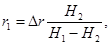
где
Δr - расстояние между двумя точками измерений при Δr = 1 м;
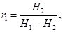
где
Н1 - напряженность магнитного переменного поля в ближайшей к поверхности земли точке, А/м;
Н2 - то же на расстоянии Δr по вертикали от точки 1.
Формула (1) - универсальная для определения глубины заложения трубопровода, поэтому ее следует применять для контроля результатов в соответствии с пп. 4.3 и 4.4.
Рис. 3. Определение глубины заложения трубопровода:
1 - магнитная антенна при определении глубины по минимуму сигнала; 2 - грунт; 3 - трубопровод; 4 - график изменения показаний индикатора u приемника от положения магнитной антенны в вертикальной плоскости, перпендикулярной к оси трубопровода
Рис. 4. Определение глубины заложения трубопровода при наклонной поверхности земли:
r - глубина заложения трубопровода; Δr - расстояние между точками измерения напряженности переменного магнитного поля тока, текущего по трубопроводу; Н1 и H2 - напряженность переменного магнитного поля тока соответственно в точках 1 и 2; Т - трубопровод
5.1. Механизация поиска дефектов в изоляционном покрытии заглубленных трубопроводов допускается при возможности проезда рядом с трубопроводом передвижной электроисследовательской лаборатории (степи и другие открытые пространства).
Для механизированного поиска дефектов в изоляционном покрытии заглубленных трубопроводов рекомендуется контактный поперечный способ.
Передвижную электроисследовательскую лабораторию оснащают двумя искателями повреждений типа ИСТ-1м, один из которых служит для поиска дефектов в изоляционном покрытии, а другой - для контроля трассы трубопровода.
Рис. 5. Схема механизированного поиска дефектов в изоляционном покрытии засыпанных трубопроводов:
1 - генератор; 2 - устройство для создания электрического контактирования с поверхностью земли; 3 - одометр; 4 - передвижная электроисследовательская лаборатория; 5 - салон лаборатории; 6 - кабина водителя; 7 - приемник ИСТ-1м; 8 - магнитная антенна; 9 - самопишущий прибор; 10 - контакт одометра; 11 - источник питания для отметчика пути
Лабораторию оснащают также устройством для создания электрического контактирования с поверхностью земли (например, устройством типа ГРАД-1) и путеизмерителем.
5.2. Собирают электрическую схему в соответствии с рис. 5 и включают генератор по п. 2.2. Настраивают аппаратуру следующим образом:
устанавливают предел измерения самопишущего прибора таким образом, чтобы перо отклонилось на середину шкалы;
проверяют работу отметчика пути (путеизмерителя). При замыкании цепи путеизмерителя перо отметчика пути на самописце должно заметно отклониться;
располагают ось антенны указателя трассы горизонтально, а аттенюатор приемника трассы так, чтобы стрелка индикатора установилась на середине шкалы.
5.3. Механизированный поиск дефектов осуществляют при движении вдоль трассы трубопровода на расстоянии 1 - 2 м со скоростью, не превышающей 5 км/ч. При этом:
водитель ведет машину, руководствуясь показаниями стрелки индикатора трассы, которая не должна выходить за пределы рядом стоящих больших делений шкалы;
оператор следит за работой самопишущего прибора, управляет аттенюатором искателя повреждений и регистрирует положение аттенюатора на диаграммной ленте самописца.
6.1. При работе следует руководствоваться следующими нормативными документами:
СНиП III-4-80 «Техника безопасности в строительстве»;
Правилами техники безопасности при строительстве магистральных стальных трубопроводов [10];
Правилами устройства электроустановок [11] (главы 1.1; 1.6; 1.7; 4.4);
Правилами технической эксплуатации электроустановок потребителей и правилами техники безопасности при эксплуатации электроустановок потребителей (главы Б 3-7; Б 3-11; Б 2-1) [9].
6.2. Лица, контролирующие качество изоляционных покрытий, должны пройти проверку знаний в квалификационной комиссии с присвоением группы электротехническому персоналу:
работающим с электроприборами - I квалификационной группы;
занимающимся проверкой качества изоляции - III квалификационной группы.
6.3. В целях безопасности работа с комплексом устройств производится в определенной последовательности:
генератор звуковой частоты подключается к электроду-заземлителю, затем к трубопроводу через контрольно-измерительную колонку и только после этого его (генератор) можно включить в работу. Собирать или разбирать электрическую схему при включенном генераторе запрещается. Электрические соединения следует выполнять только изолированным проводом. На линии рабочего заземления необходимо установить предупредительные маяки для исключения ее повреждений;
оператор, двигаясь вдоль трубопровода с приемником и датчиками, должен следить не только за показаниями стрелочного индикатора и трассой трубопровода, но и учитывать препятствия на пути следования с целью предупреждения падения и травмирования.
6.4. При использовании комплекса устройств для неразрушающего контроля, а также в процессе его транспортировки необходимо соблюдать требования завода-изготовителя, изложенные в паспорте.
6.5. Эксплуатация, профилактика и ремонт комплекса устройств для неразрушающего контроля осуществляются специально обученным персоналом.
Справочное
1. Поиск трассы трубопровода основан на принципах определения напряженности магнитного поля на некотором расстоянии от прямолинейного проводника, по которому течет электрический ток. На рис. 1 показано взаимное расположение одиночного трубопровода и магнитной антенны, воспринимающей напряженность переменного магнитного поля. Зависимость наведенной в магнитной антенне электродвижущей силы l от силы тока J в одиночном трубопроводе, угла места и угла поворота оси магнитной антенны относительно горизонтали α определяют формулой
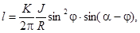
где
K - постоянный коэффициент, связывающий напряженность
переменного магнитного поля Н ( 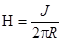
R - минимальное расстояние от трубопровода до горизонтали, на которой расположена магнитная антенна, м.
Рис. 1. Взаимное расположение трубопровода Т с током J и магнитной антенны мА при определении трассы однониточного трубопровода:
R - минимальное расстояние от трубопровода до горизонтали, на которой установлена магнитная антенна; φ - угол между горизонталью и направлением от оси трубопровода к центру магнитной антенны (угол места); α - угол между горизонталью и осью магнитной антенны
На рис. 2 показано изменение индуктированной в магнитной антенне электродвижущей силы в зависимости от расстояния X/R до трубопровода по горизонтали X и угла α между горизонталью и осью магнитной антенны. Характер кривых показывает, что:
а) при горизонтальном расположении оси магнитной антенны (угол α = 0, максимум индуктированной электродвижущей силы (ЭДС) приходится на вертикаль, проходящую через ось трубопровода;
б) при любых других углах α расположение максимума сигнала отклоняется от вертикали, проходящей через центр трубы, и величина максимума уменьшается;
в) при любых углах α ≠ 0 при перемещении в пределах 2R магнитной антенны в горизонтальной плоскости наведенная ЭДС имеет нулевое значение;
г) при α = p/2 нулевое значение ЭДС приходится на вертикаль, проходящую через центр трубы.
Положения, приведенные в пп. а и г, позволяют в качестве критерия расположения трассы использовать либо максимум индуктированной ЭДС при горизонтальном расположении оси магнитной антенны, либо нулевое значение - при вертикальном.
С помощью п. «в» можно определить глубину заложения одиночного трубопровода по нулевому значению индуктированного сигнала при p/2 > α > 0. Однако наиболее применимым в практике определения глубины заложения является угол p/4 (45°), поскольку при этой величине угла α нулевое значение наведенной ЭДС приходится на расстояние R в горизонтальной плоскости от вертикали, проходящей через центр трубопровода.
Рис. 2. Изменение индуктированной в магнитной антенне электродвижущей силы в зависимости от горизонтального перемещения перпендикулярно трубе X и ориентации оси датчика α относительно горизонтали.
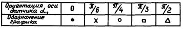
Рис. 2. Изменение индуктированной в магнитной антенне электродвижущей силы в зависимости от горизонтального перемещения перпендикулярно к трубе X и ориентации оси датчика α относительно горизонтали
Рис. 3. Взаимное расположение системы параллельных трубопроводов и магнитной антенны
Рис 4. Схема определения дефекта в изоляционном покрытии:
X - направление, перпендикулярное к трубопроводу в горизонтальной плоскости; Y - направление вдоль трубопровода; Z - направление по вертикали; h - глубина расположения дефекта; А и Б - точки измерения разности потенциалов
На рис. 3 показано взаимное расположение системы параллельных трубопроводов и магнитной антенны.
Индуцированная в магнитной антенне электродвижущая сила будет равна сумме ЭДС, наведенных от различных трубопроводов
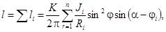
где n - общее число параллельных трубопроводов в системе.
При суммировании наведенных ЭДС исчезают особые точки на графике l = f(X, α), и поэтому определение трассы и глубины конкретного трубопровода становится затруднительным.
2. Поиск дефектов в изоляционном покрытии представлен на рис. 4.
Стекающий с трубопровода через дефект ток создает между двумя точками, расположенными на поверхности земли, падение напряжения
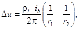
где
iд - ток, стекающий с трубопровода через дефект в изоляции, А;
r1; r2 - радиальная координата точки поверхности земли, на которой установлен измерительный электрод, м. Центр радиусов находится в центре дефекта изоляционного покрытия.
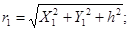 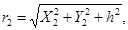
h - глубина расположения дефекта;
А и Б - точки измерения разности потенциалов;
ρi - удельное сопротивление грунта, Ом · м.
Принцип поиска локальных дефектов, основанный на формуле (3), положен в основу контактного, квазибесконтактного и емкостного методов.
ЛИТЕРАТУРА
1. Инструкция по контролю
качества строительства и техническому надзору при производстве
изоляционно-укладочных работ и сооружений средств электрохимической защиты на
магистральных трубопроводах. 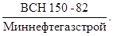
2. ГОСТ 25812-83 «Трубопроводы стальные магистральные. Общие требования к защите от коррозии».
3. ГОСТ 9.015-74 «Единая система защиты от коррозии и старения. Подземные сооружения. Общие технические требования».
4. Инструкция по интегральной оценке состояния изоляционного покрытия законченных строительством участков трубопроводов на переменном токе. - М.: ВНИИГаз, 1984.
5. Рекомендации по контролю глубины заложения подземного трубопровода. Р 352-79. - М.: 1979.
6. Сидоров Б.В., Щербакова Л.Ф. Контроль изоляционного покрытия и состояния трубопроводов. - М.: ВНИИОЭНТ, 1979.
7. СНиП III-42-80 «Правила производства и приемки работ. Магистральные трубопроводы»
8. СНиП III-4-80 «Техника безопасности в строительстве». - М.: Стройиздат, 1980.
9. Правила технической эксплуатации электроустановок потребителей и правила техники безопасность при эксплуатации электроустановок потребителей. - М.: Энергоатомиздат, 1986.
10. Правила техники безопасности при строительстве магистральных стальных трубопроводов. - М.: Недра, 1982.
11. Правила устройства электроустановок. - М.: Энергоатомиздат, 1985.
СОДЕРЖАНИЕ
|
4. Определение глубины залегания трубопровода. 4 5. Механизация поиска дефектов в изоляционном покрытии заглубленных трубопроводов. 6 |